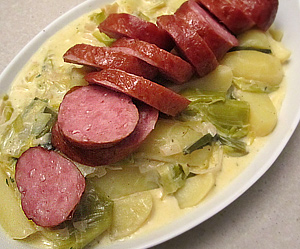

Waadtländer Lauch-Kartoffel-Gemüse mit Saucisson
5 von 6Zwei Lauch-Stängel je nach Dicke längs halbieren, waschen und in ca. 5 cm lange Stücke schneiden. Eine Zwiebel fein hacken. 600 g Kartoffeln schälen und in Viertel schneiden.
Zwiebeln in Butter glasig dünsten. Lauch beifügen und mitdünsten. Mit Wein ablöschen, einkochen lassen. 2 Dl Bouillon dazugiessen, würzen. Saucissons auf das Lauchgemüse legen und 10 Minuten köcheln lassen. Kartoffeln dazugeben und alles weitere 45 Minuten zugedeckt köcheln lassen. Die Würste herausnehmen und warm stellen.
1.5 Dl Saucenhalbrahm zum Lauch giessen, sämig einkochen lassen. Mit etwas Thymian abschmecken. Würste aufschneiden und auf dem Lauch-Kartoffel-Gemüse servieren.
